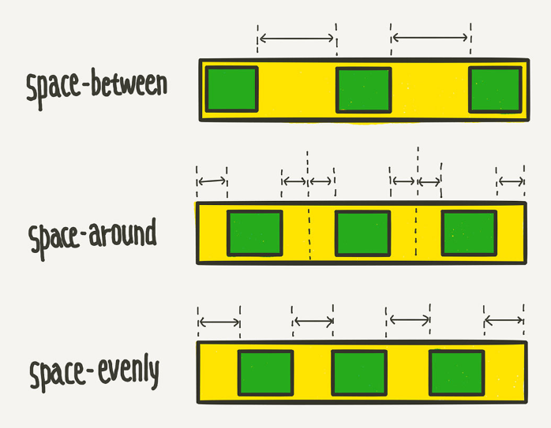

# display: flex
- 내부에 속한 요소들의 크기를 자동으로 조절해주는 display속성
- 레이아웃을 구성할 때 아주 유용한 기능이다
- display: flex로 설정한 요소는 flex-container가 되고 내부에 속한 요소들은 flex-item이 된다
# display: flex 기본 예제
# flex-direction: row
# flex-direction: row-reverse
# flex-direction: column
# flex-direction: column-reverse
# flex-wrap: nowrap (줄을 바꾸지 않음)
# flex-wrap: wrap (크기 조절을 하지 않고 줄을 바꿈)
# flex-wrap: wrap-reverse (줄을 위로 바꿈)
# flex-direction: column 과 flex-wrap: wrap을 조합하는 경우
# flex-flow: [flex-direction] [flex-wrap] (row, nowrap)
# flex-flow: [flex-direction] [flex-wrap] (row-reverse, wrap)
# justify-content: flex-start (default)
# justify-content: flex-end
# justify-content: flex-center

# justify-content: space-between
# justify-content: space-around
# justify-content: space-evenly
# display: flex를 사용해 웹 페이지 레이아웃 구성하기
# 연습